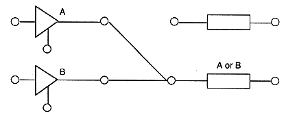
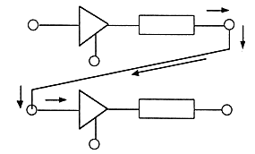

Title | Function | Function Name | No |
format void STM_ConnectCdbuf (StmHn keystm, StmHn bufstm) Input keystm: Connection source stream handle : bufstm: Connection destination stream handle (STM_CON_NULBUF for disconnection) Output None Function value None Function Connects the aperture and buffer section in the CD block. Remarks (a) From the aperture assigned to the connection source stream to the connection destination stream Read Reads to the assigned CD buffer section. : (b) To return to the original setting, specify the same stream handle as the connection source. . (c) Connection when the stream key is set to the OR condition.

Title | Function |
format void STM_MoveCdbuf (StmHn src, Sint32 spos, Sint32 snum, StmHn dst) Input src: Source stream handle : spos: Sector position (first sector is STM_CDBUF_TOP) snum: Number of sectors (STM_CDBUF_END for the end) : dst: destination stream handle Output None Function value None Function Moves sector data from the buffer section in the CD block to the aperture. Remarks (a) From the CD buffer section assigned to the source stream, the destination stream Sector data is moved to the aperture assigned to the ream.(B) Only a CD stream can be specified.
